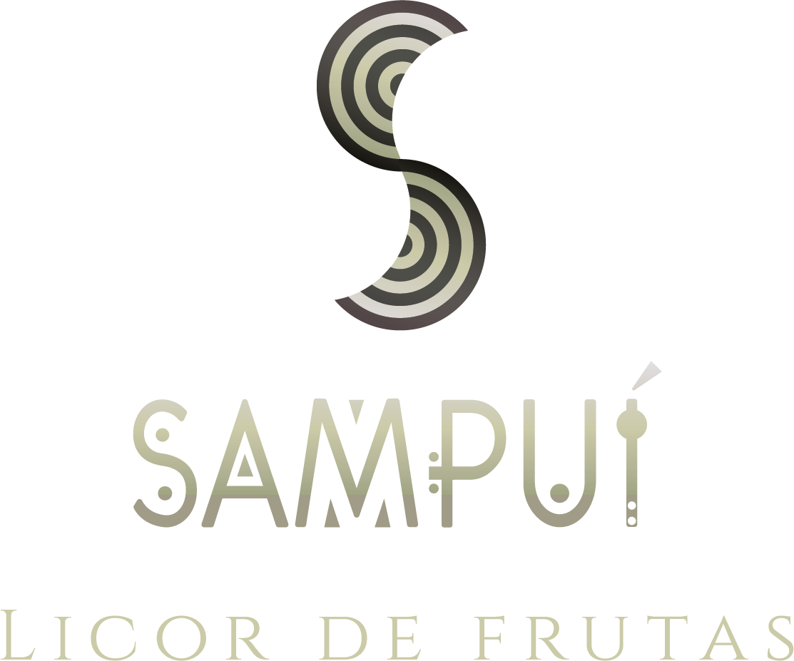
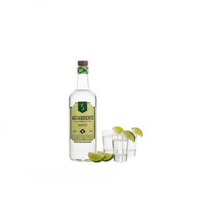
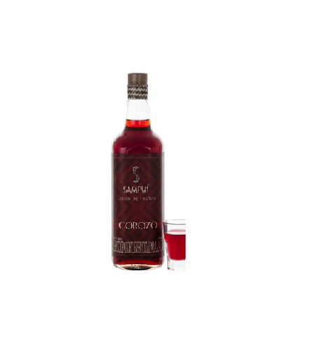
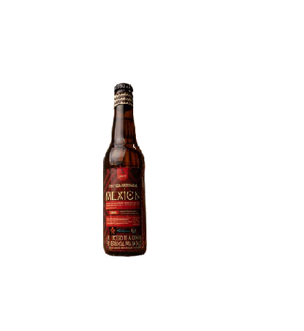

Tradición Zenú e innovación en bebidas artesanales.

En SAMPUI, fusionamos la tradición zenú con la innovación nuestros licores, aguardientes y cervezas artesanales. Nuestro compromiso con la comunidad se refleja en nuestra colaboración con 79 mujeres artesanas, cuyo talento da vida al trenzado en caña flecha presente en cada botella.

Ingredientes:
Alcohol destilado de caña,
anís, coco, vainilla, cacao
y agua.
Presentacion:
750 (ml).

Ingredientes:
Alcohol destilado de caña,
corozo, azúcar y agua.
Presentacion:
750 (ml).

Ingredientes:
Artesanal de estilo
Dubbel.
5.5% de alcohol,
enriquecida con la
adición de corozo.